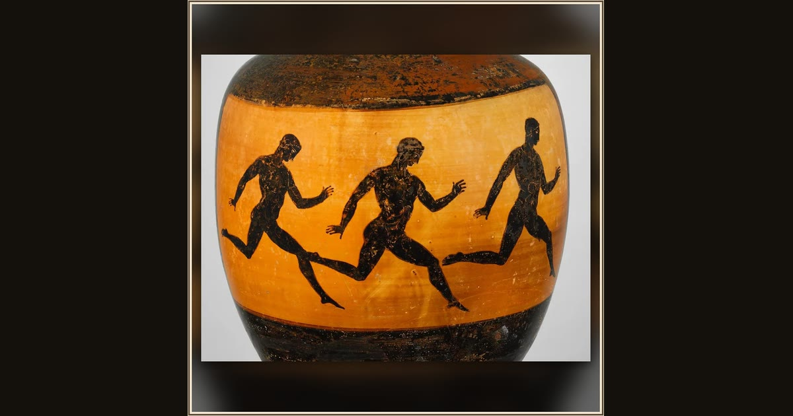

Terracotta Panathenaic prize amphora
Kittos Group · ca. 366/365 BCE · met
Three unarmed runners race across a Panathenaic prize amphora; the Athenian also proposes running contests, but requires his competitors to carry arms (833a). Explore its place in Plato's Dialogues, Laws · Book VIII, section 25.